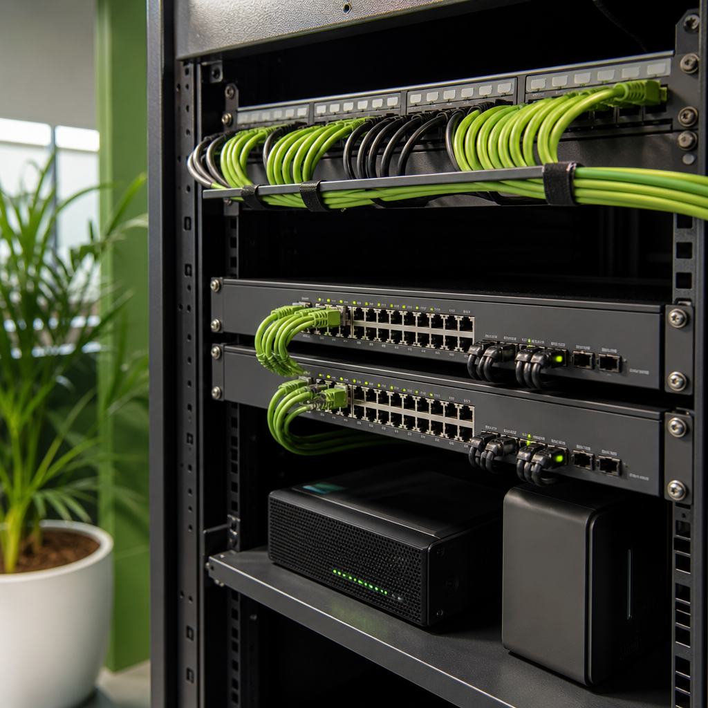

Case study · Systems Architecture & Database Modernization
Industrial Systems & Legacy SQL Modernization
An established environmental technology enterprise relied on a legacy desktop database system for day-to-day jobs, dispatch tracking, compliance certifications, and stock. GBTech modernized the operations into a secure web application, resolved 29 structural integrity issues, and deployed automated disaster recovery pipelines.
The Challenge
Decades of critical business data trapped in legacy desktop software
The client operated an intensive workflow tracking environmental engineering jobs, compliance certifications, multi-region dispatches, and inventory. The operations relied on an aging desktop application (VB.NET Windows Forms) bound directly to on-premises SQL Server instances.
- Workstation Lock-In: Staff could only access operations from specific office PCs, creating severe bottlenecks for field work and remote management.
- Data Integrity Erosion: Years of concurrent usage had accumulated blank records, unlinked dispatches, and partial overwrite conflicts.
- Fragile Disaster Recovery: Backups were manual or vulnerable to hardware degradation, with no automated verified restoration pipeline.
Client identity protected under commercial confidentiality; architectural models, audit methodologies, and workflows are first-party GBTech engineering.
The Engineering
Full-stack modernization without workflow disruption
Rather than forcing a disruptive, multi-year rebuild or locking the client into an exorbitant enterprise SaaS subscription, GBTech engineered a targeted, phased modernization:
- Modern Web Architecture over VPN: Rebuilt core workflows into a responsive Node.js/Express web platform accessible securely over encrypted corporate VPN from any browser or tablet.
- 29-Point Data Integrity Audit: Authored and executed automated scrub tools to detect orphaned dispatches, validate certification keys, reconcile stock levels, and eliminate blank record race conditions.
- Concurrency & Overwrite Safeguards: Introduced atomic save confirmations, blur-state auto-saves, and collision checks so multi-user concurrent edits never overwrite critical job data.
- Hardened Automated SQL Backups: Implemented least-privilege database backup operators (`db_backupoperator`), automated daily snapshot scripts, and disaster recovery rollover procedures.
- Microsoft Workplace Integration: Bridged the modernized core with PowerApps and Dataverse for field mobility where appropriate.
The Result
Zero data loss, complete mobility, and structural stability
The business eliminated workstation dependencies and gained full operational continuity. The modernized system preserves decades of historical job archives while running faster, cleaner, and safely backed up every day.
This engagement exemplifies what GBTech does best: diagnosing structural flaws at the database and architecture level, modernizing legacy assets without business disruption, and ensuring the client owns their systems entirely.
Have a legacy system or database that needs modernizing?
We work with businesses across New Zealand to rescue, audit, and modernize legacy SQL Server, Access, and desktop applications into clean, owned web systems.